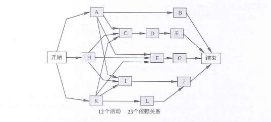
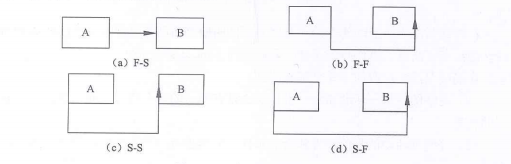
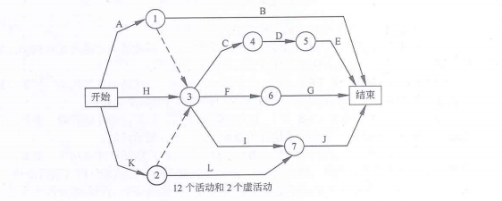

文章目录
7个过程
- 1、规划进度管理过程
- 制定政策、程序和文档以管理项目进度
- 2、定义活动过程
- 识别和记录为完成项目可交付成果而需采取的具体行动
- 3、排列活动顺序过程
- 识别和记录项目活动之间的关系
- 4、估算活动资源过程
- 估算执行各项活动所需材料、人员、设备或用品的种类和数量
- 5、估算活动持续时间过程
- 根据资源估算的结果、估算完成单项活动所需工期
- 6、制定进度过程
- 分析活动顺序、持续时间、资源需求和进度制约因素，创建项目进度模型
- 7、控制进度过程
排列活动顺序的工具和技术
前导图法
- 前导图法（Precedence Diagramming Method，PDM），也称紧前关系绘图法，是用于编制项目进度网络的一种方法，它使用方框或者长方形代表活动，节点之间用箭头连接，以显示节点之间的逻辑关系。
依赖关系
- 1、结束-开始的关系（F-S型）。前序活动结束后，后续活动才能开始。
- 例如：只有比赛（紧前活动）结束，颁奖典礼（紧后活动）才能开始
- 2、结束-结束的关系（F-F型）。前序活动结束后，后续活动才能结束。
- 例如：只有完成文件的编写（紧前活动），才能完成文件的编辑（紧后活动）。
- 3、开始-开始的关系（S-S型）。前序活动开始后，后续活动才能开始。
- 例如：开始地浇灌（紧前活动）之后，才能开始混凝土的找平（紧后活动）。
- 4、开始-结束的关系（S-F型）。前序活动开始后，后续活动才能结束。
- 例如：只有第二位保安人员开始值班（紧前活动），第一位保安人员才能结束值班（紧后活动）。
 - 在前导图法中，每项活动有唯一的活动号，每项活动都注明了预计工期（活动持续时间）。通常，每个节点的活动会有如下几个时间：最早开始时间（ES）、最迟开始时间（LS）、最早完成时间（EF）、最迟完成时间（LF）
- 例如：只有第二位保安人员开始值班（紧前活动），第一位保安人员才能结束值班（紧后活动）。
箭线图法
- 与前导图法不同，箭线图法（Arrow Diagramming Method，ADM）是用箭线表示活动、节点表示事件的一种网络图绘制方法，这种网络图也被称作双代号网络图（节点和箭线都要编号）或活动箭线图（AOA）。
 - 在箭线图法中，活动的开始（箭尾）事件叫做该活动的紧前事件，活动的结束（箭头）事件叫该活动的紧后事件
- 3个基本原则
- 1、网络图中每一活动和每一事件都必须有唯一的一个代号，即网络图中不会有相同的代号
- 2、任两项活动的紧前事件和紧后事件代号至少有一个不相同，节点代号沿箭线方向越来越大
- 3、流入（流出）同一节点的活动，均有共同的紧后活动（或紧前活动）
估算活动持续时间工具和技术
- 1、专家判断
- 借鉴历史信息，专家判断能提供持续时间估算所需要的信息，或根据以往类似的项目经验，给出活动持续时间的上限
- 2、类比估算
- 使用相似活动或项目的历史数据，来估算
- 3、参数估算
- 基于历史数据和项目参数，使用某种算法来计算成本或持续时间
- 4、三点估算
- 最可能时间（Tm）
- 最乐观时间（To）
- 最悲观时间（Tp）
- 期望持续时间 Te = （To+4Tm+Tp）/6
- 5、群体决策技术
- 6、储备分析
- 进行持续时间估算时，需要考虑应急储备（有时称时间储备或缓冲时间），并将其纳内项目进度计划中。
进度规划
关键链法
- 是一种进度规划方法，允许项目团队在任何项目进度路径上设置缓冲时间，以应对资源限制和项目的不确定性。
- 在进度模型中，估算项目最短工期，确定逻辑网络路径的进度灵活性大小的一种方法。
- 关键路径是项目中时间最长的活动顺序，决定着可能的项目最短工期。
- 总浮动时间
- 在不延误项目完工时间且不违反进度制约因素的前提下，活动可以从最早开始时间推迟或拖延的时间量。
- 总浮动时间 = 最晚开始时间 - 最早开始时间
- 自由浮动时间
- 在不延误任何紧后活动的最早开始时间且不违反进度制约的因素前提下，活动可以从最早开始时间推迟或拖延的时间量
- 自由浮动时间 = 紧后活动最早开始时间的最小值 - 本活动的最早完成时间
控制进度
缩短工期活动的方法
- 1、赶工，投入更多的资源或增加工作时间，以缩短关键活动的工期；
- 2、快速根据，并行施工，以缩短关键路径的长度
- 3、使用高素质的资源或经验更丰富的人员
- 4、减少活动范围或降低活动要求
- 5、改进方法或技术，以提高生产效率
- 6、加强质量管理，及时发现问题，减少返工，从而缩短工期。